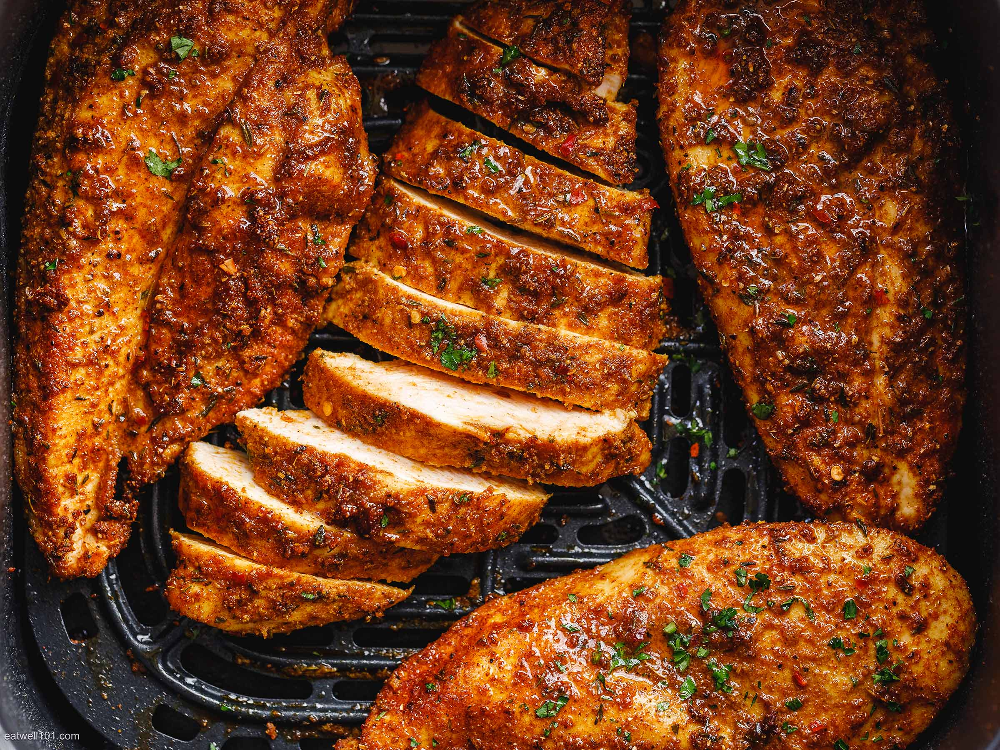

Air-Fryed Chicken

Delicious, crispy, and nutritious air-fryed chicken
This recipe sticks to the basics, using nothing but a variety of seasonings and chicken breast.
The simple ingredients keep the chicken healthy (by avoiding ingredients such as oils)
while also making it extremely easy to prepare.
Ingredients
- Chicken
- Oregano
- Salt
- Pepper
- Goya Seasoning
Instructions
- Place chicken on cutting board and beat chicken.
- Add a generous amount of each seasoning to the chicken. Flip chicken and repeat.
- Place chicken in air-fryer according to your air-fryer's specificactions (as a general rule, we reccomend 24 minutes). Halfway through cook time, flip.
- Remove chicken from air-fryer and enjoy with your favorite side dishes!